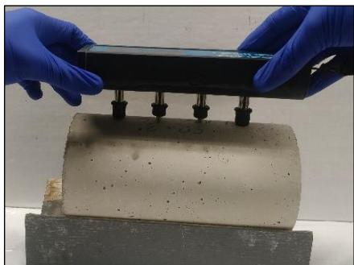
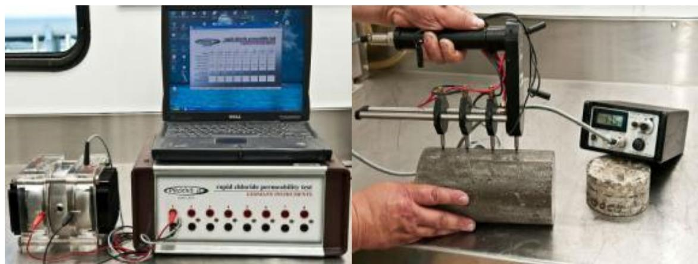
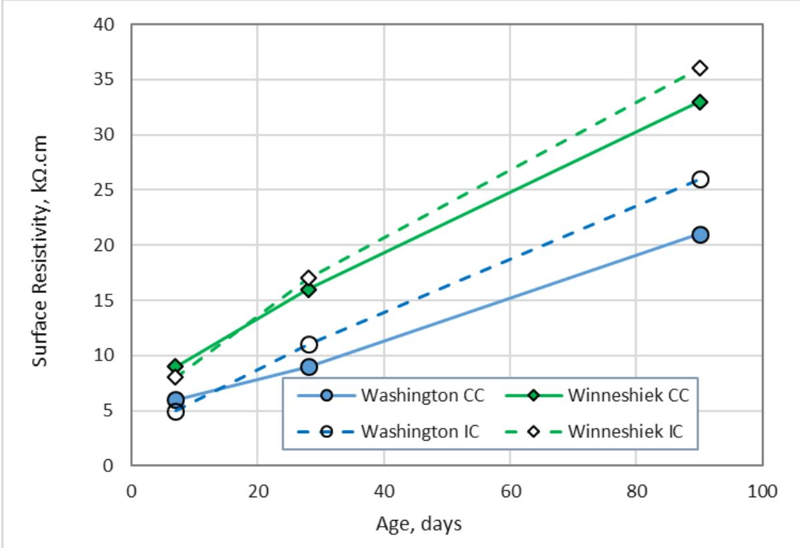
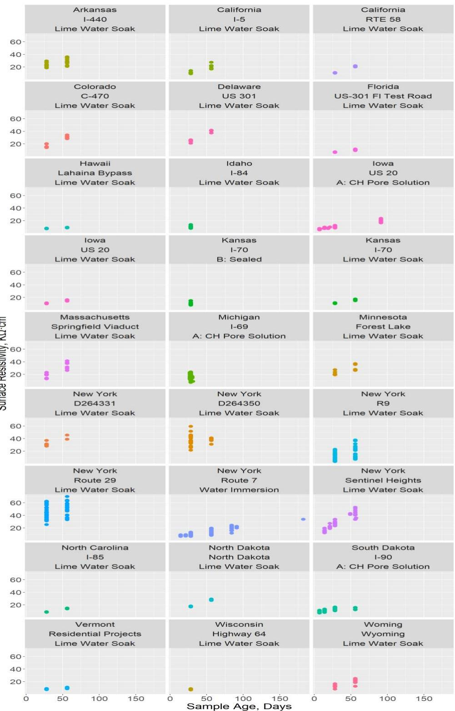
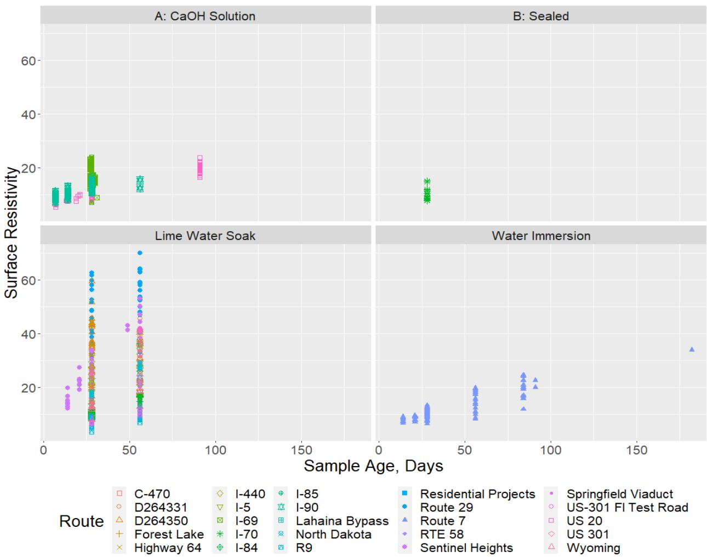
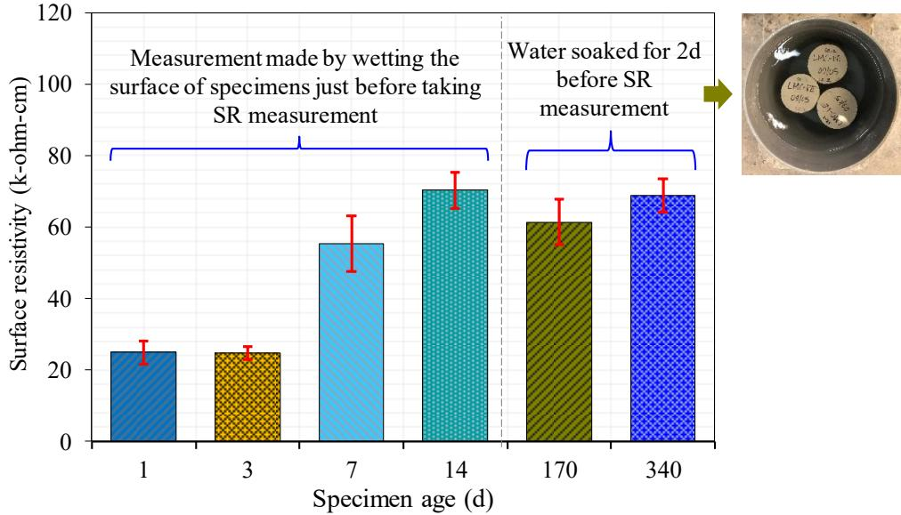
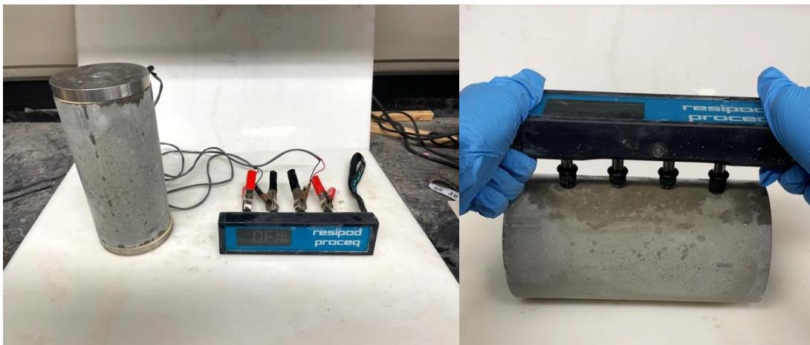
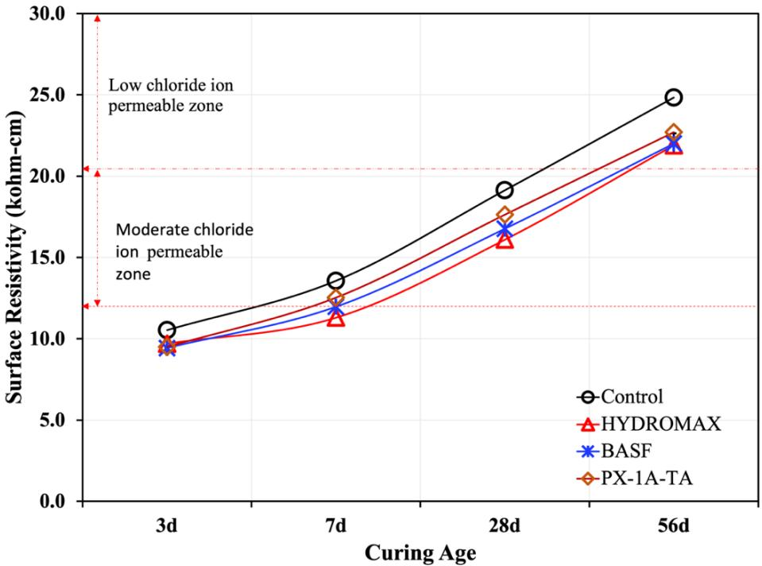
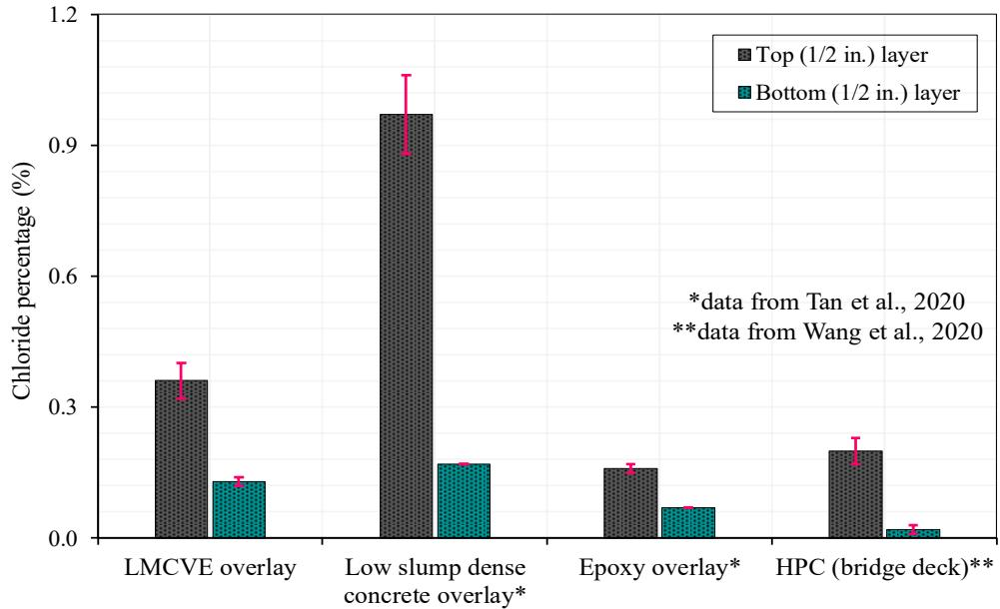

Surface Resistivity
Surface resistivity is an electrical property of concrete that quantifies the material’s ability to impede the flow of ions through its pore solution, serving as a primary indicator of permeability and long-term durability. The measurement is typically performed using a four-probe Wenner configuration, which injects current through outer electrodes and measures the voltage drop across inner electrodes to calculate resistance based on Ohm’s law and probe geometry [1] [2]. Because ion transport occurs via the interconnected pore network, higher resistivity values correspond to a denser microstructure with reduced pore connectivity, thereby limiting the ingress of deleterious substances such as chlorides and water [3] [4]. This non-destructive test provides an indirect assessment of concrete quality by correlating electrical resistance with the material’s capacity to resist corrosion and fluid penetration in aggressive environments [1] [9].
Sources (9)
Key findings
- Surface resistivity measured with a Wenner four-probe device correlates well with standard chloride-penetration test results, supporting its use as a rapid field quality-assurance tool [2] [5].
- Surface resistivity measurements are highly sensitive to specimen moisture conditions and testing protocols, with drying time and conditioning methods significantly affecting data consistency [1] [2].
- Incorporating lightweight fine aggregate for internal curing consistently increased surface resistivity compared to conventional concrete mixes, indicating improved durability [7] [8].
- Higher water-to-cement ratios produced lower surface resistivity values, establishing an inverse relationship between the two parameters [1].
- Adding superabsorbent polymers to concrete reduced its surface electrical resistivity due to increased porosity and voids created by the polymer particles [9].
- Surface resistivity in certain concrete systems increases markedly with age as the microstructure densifies, though long-term trends may show slight declines associated with cracking or spalling [3].
- High fly-ash contents delayed the initial rise in surface resistivity but continued to increase over time, suggesting strong long-term durability despite slower early-age gains [4].
- Ternary cementitious blends substantially raised surface resistivity and reduced ion diffusion coefficients, indicating enhanced concrete durability [5].
Surface Resistivity Applications
This electrical property serves as an indirect indicator of durability by reflecting the connectivity and size of pores within the material, where higher values signify a denser microstructure that impedes ion transport [3]. Because ionic conductivity is governed by the pore solution, surface resistivity correlates with permeability to deleterious agents such as chlorides, allowing engineers to assess long-term performance in aggressive environments [4].
The figure below illustrates the practical application of this property through a surface resistivity measurement using a four-point Wenner probe.

Surface resistivity measurement using four-point Wenner probe [3]The image shows a handheld device with four vertical probes being pressed against the curved surface of a concrete cylinder.
Research problem — Current concrete acceptance criteria fail to reliably predict durability-critical transport behaviors such as moisture and chloride ingress, creating a need for rapid, nondestructive proxy tests like surface resistivity [1]. Standard surface resistivity measurements are compromised by excessive variability due to specimen conditioning and testing protocol deviations, undermining confidence in their use as a consistent durability benchmark [1]. Direct surface resistivity readings often fail to accurately predict bulk concrete properties or long-term chloride penetration resistance because they are influenced by shallow sampling depth and test-induced heating effects [2].
The following figure illustrates the relationship between these measurements by plotting scatter data for surface resistivity against compressive strength.
 Scatter data for surface resistivity versus compressive strength at different ages. [1]
Scatter data for surface resistivity versus compressive strength at different ages. [1]
Data points representing various construction routes are plotted to show the relationship between these two properties. While higher strength is generally consistent with higher resistivity, adding cement does not inherently increase durability and may have the opposite result.
State of the art — Surface resistivity testing using a four-probe Wenner array, standardized by methods such as AASHTO T 358 and TP 95, is widely adopted by state departments of transportation as a rapid, nondestructive quality assurance tool for evaluating concrete durability [1] [2] [5] [6]. Current research focuses on refining correlations between resistivity and chloride ingress for low-permeability concretes, standardizing sample conditioning to reduce variability, and developing models that predict long-term performance from early-age measurements [2] [6].
The following figure illustrates common equipment used for these measurements.

Rapid chloride permeability test (left) and surface resistivity meter (right) [5]The figure displays two distinct testing setups: a Rapid Chloride Permeability Test apparatus on the left, featuring a laptop connected to a control unit with multiple electrode ports, and a handheld four-probe Wenner array device being pressed against a concrete cylinder on the right. The surface resistivity meter is used to evaluate the electrical resistivity of water saturated concrete to indicate permeability, providing a fast assessment that does not require sample preparation.
Findings from the reports
- Internal curing with lightweight fine aggregate increased surface resistivity relative to conventional mixes in both laboratory cylinders and field bridge decks, demonstrating a durability advantage [7] [8].
- Surface resistivity measured with a Wenner four‑probe meter correlated strongly with AASHTO T277 chloride‑penetration results after applying geometric and joule‑heating corrections, confirming the Wenner method as an effective QA/QC tool [2] [5].
- Specification documents established a performance floor of at least 10 kΩ·cm at 28 days and required a formation factor exceeding 1500 at 91 days, using bulk resistivity as an acceptance criterion [5] [6].
- The measured surface resistivity was sensitive to specimen drying time; readings taken shortly after wet curing were noticeably lower than those obtained after longer drying periods [2].
- Incorporating ternary cementitious blends (e.g., fly ash and slag) raised concrete surface resistivity and reduced ion diffusion coefficients, indicating enhanced resistance to chloride ingress [5].
- Surface resistivity tended to increase with concrete age and higher compressive strength, while mixes with higher water‑to‑cement ratios exhibited lower resistivity, reflecting an inverse relationship between w/c and durability [1].
- Samples conditioned in lime water showed markedly greater variability in surface‑resistivity results, highlighting the importance of consistent conditioning and testing protocols [1].
Novelty & rigor — The research introduces a novel framework that links surface resistivity measurements directly to chloride ion penetration resistance, enabling rapid field testing as a reliable surrogate for longer durability assessments [2]. Methodological innovations include the use of internal curing with lightweight aggregates and specific probe-contact corrections to enhance measurement stability and reproducibility across varying environmental conditions [3] [7]. The approach standardizes specimen geometry and conditioning protocols to reduce variability, establishing surface resistivity as a consistent performance-based metric for quality assurance in concrete specifications [1] [5].
The following figure illustrates the resulting surface resistivity measurements in kΩ·cm.

Surface resistivity test results (kΩ.cm) [7]The figure plots surface resistivity as a function of age, days for concrete mixtures from two different counties. The data represent an average of three samples and shows that using LWFA improved the surface resistivity for both mixture designs.
Reported values
| Parameter | Value | Context | Source |
|---|---|---|---|
| surface resistivity difference | 14% | readings at 5 minutes vs 35 minutes after wet cure | [2] |
| surface resistivity difference | 24% | readings at 5 minutes vs 55 minutes after wet cure | [2] |
| surface resistivity | 10 kΩ/cm | at 28 days | [5] |
| formation factor | > 1500 | at an equivalent age of 91 days | [6] |
| surface resistivity | 50.3 kΩ·cm | control section, three months after placement, bridge deck | [8] |
| surface resistivity | 52.7 kΩ·cm | IC section, three months after placement, bridge deck | [8] |
| surface resistivity | 70.7 kΩ·cm | control section, one year after placement, bridge deck | [8] |
| surface resistivity | 73.9 kΩ·cm | IC section, one year after placement, bridge deck | [8] |
Across the reviewed reports, surface resistivity serves as a robust indicator of concrete durability and chloride resistance, with studies confirming its strong correlation to standard AASHTO T277 charge measurements when appropriate geometric and joule-effect corrections are applied. The application of internal curing using lightweight fine aggregate consistently yields higher surface resistivity values compared to conventional mixes after the first week, a trend observed in both laboratory cylinders and field installations that indicates enhanced hydration and durability benefits. While resistivity generally increases with concrete age and lower water-to-cement ratios, the measurements are highly sensitive to specimen conditioning and drying time, necessitating standardized protocols to ensure consistent quality assurance results. [1] [2] [5] [7] [8]
The figure below illustrates how surface resistivity changes over time across different locations.

Surface resistivity versus age for various locations [1]The figure displays a grid of scatter plots where the vertical axis represents surface resistivity and the horizontal axis represents sample age in days.
Implications — Specifications should shift from prescriptive ingredient limits to performance-based minimum resistivity thresholds, allowing agencies to verify durability targets and mix-design approval early in the construction process [1] [5] [6]. Adopting internal curing techniques is recommended for applications where enhanced long-term durability and resistance to environmental attack are critical, as this approach consistently yields higher surface resistivity compared to conventional mixes [7] [8]. Field quality assurance programs should utilize rapid surface resistivity testing as a practical proxy for chloride ingress resistance, provided that strict standardization of sample conditioning and geometric corrections is maintained to ensure data reliability [2] [5].
The figure below illustrates how internal curing techniques compare to conventional methods in enhancing surface resistivity.
 Comparison of external and internal curing mechanisms in concrete specimens. [6]
Comparison of external and internal curing mechanisms in concrete specimens. [6]
The figure illustrates the difference between conventional external curing, where water penetrates from the surface, and internal curing, which utilizes pre-wetted lightweight aggregates to supply moisture throughout the specimen volume. By maintaining internal relative humidity through these water-filled intrusions, this method ensures complete hydration of cement particles even in low-water-to-cementitious material ratio mixes.
Limitations — Measurement reliability is compromised by high variability in lime-water conditioned specimens and datasets that fail to comply with published testing standards [1]. The correlation between surface resistivity and permeability tests becomes uncertain for low-permeability concretes, requiring fully saturated conditions and standardized drying times to ensure accuracy [2]. Interpretation of results is hindered by unclear variations across different sites and the lack of fixed acceptance criteria, which necessitates project-specific definitions and additional research into environmental effects [6] [7].
The following figure illustrates how surface resistivity varies under different preparation conditions.

Surface resistivity for various preparation conditions [1]The figure displays a multi-panel scatter plot comparing surface resistivity measurements across different sample ages and environmental conditioning treatments. Data points are categorized by specific project routes, illustrating the variability in electrical resistance values observed under conditions such as lime water soaking versus sealed environments.
Evidence: 8 reports (6 primary)
Surface Resistivity Evolution and Performance Metrics
Research problem — How can reliable surface resistivity measurements be obtained from concrete overlays with limited curing regimes to accurately assess their long-term durability and chloride resistance [3]? What is the impact of incorporating super-absorbent polymers on the surface electrical resistivity of concrete, and how does this modification affect permeability proxies and corrosion risk [9]?
State of the art — Surface resistivity is widely established as a standard, non-destructive metric for evaluating the permeability and durability evolution of cementitious materials [3] [9]. Standardized testing protocols utilize handheld four-point Wenner probes or direct two-electrode methods to measure surface resistance, which is then converted to resistivity values expressed in kΩ·cm [3] [9]. Current practice emphasizes strict specimen pre-conditioning, such as water soaking for later-age measurements, to ensure stable readings that accurately reflect microstructural densification and hydration effects over time [3].
The figure below illustrates how surface resistivity evolves as cementitious materials age.

Surface resistivity development with age [3]The figure displays a bar chart comparing surface resistivity values across different specimen ages, ranging from early curing stages to long-term maturity. The data demonstrates that as cementitious systems undergo continued hydration, their pore connectivity is reduced, resulting in higher surface resistivity values which indicate improved durability against the ingress of deleterious ions.
Findings from the reports
- LMC-VE overlay surface resistivity increased rapidly during early-age curing and continued to rise over more than a year, reflecting pore refinement and microstructural densification [3].
- Incorporating superabsorbent polymers into concrete consistently lowered surface electrical resistivity due to additional pores and voids created by the swollen polymer particles [9].
- The reduction in surface resistivity caused by superabsorbent polymers was modest enough to keep values within acceptable structural limits, although it accompanied a slight drop in compressive strength [9].
- Using dry superabsorbent polymers mitigated the negative effects on surface resistivity and strength compared to using pre-soaked polymers [9].
- Modified M-QMC concrete demonstrated a steady rise in surface resistivity with age, eventually reaching levels classified as having low chloride-ion penetrability [4].
- Cored samples of modified M-QMC recorded lower early-age surface resistivity than cast specimens due to differences in curing conditions [4].
- Conventional QMC and C4 mixes exhibited slower increases in surface resistivity over time compared to the modified M-QMC mix, with the C4 mix remaining markedly lower throughout the monitoring period [4].
- High fly-ash contents delayed the initial rise in surface resistivity but continued to increase over time, suggesting strong long-term durability potential [4].
Novelty & rigor — Novelty lies in the comprehensive, time-dependent characterization of surface resistivity evolution for low-modulus latex-modified concrete from early age through multi-year service, establishing the first documented evolution profile for this material class [3]. The approach is distinguished by the systematic coupling of superabsorbent polymer-induced internal curing with time-dependent surface resistivity measurements to provide a quantitative durability indicator linking electrical properties to permeability changes not previously reported for internally cured mixes [9]. Methodological rigor is enhanced by the introduction of specific preconditioning steps, such as water-soak stabilization and saturated cloth correction factors, which resolve measurement instability in early-age testing and ensure repeatable field data acquisition across varying environmental conditions [3].
The following figure illustrates the comparative measurement techniques for bulk and surface resistivity.

Measurement of bulk resistivity (left) and surface resistivity (right) [9]The figure displays a cylindrical concrete specimen alongside a digital meter with four probes, illustrating the setup for measuring bulk electrical resistance. A second view shows a handheld device with multiple electrodes pressed against the flat surface of a concrete cylinder to perform surface resistivity testing.
Reported values
| Parameter | Value | Context | Source |
|---|---|---|---|
| surface resistivity | 110.3 kΩ-cm | laboratory specimens water-soaked at 440 days | [3] |
| surface resistivity | 16.75 to 39 kΩ-cm | at three locations at an overlay age of 4 days | [3] |
| surface resistivity | 24 kΩ-cm | water cured LMC-VE specimens at 1 day | [3] |
| surface resistivity | 24.9 kΩ-cm | laboratory-cast LMC-VE specimens at 3 days | [3] |
| surface resistivity | 56 kΩ-cm | LMC-VE specimens at 7 days | [3] |
| surface resistivity | 61.4 kΩ-cm | laboratory specimens water-soaked at 170 days | [3] |
| surface resistivity | 63 kΩ-cm | LMC-VE specimens at 170 days | [3] |
| surface resistivity | 69.0 kΩ-cm | laboratory specimens water-soaked at 340 days | [3] |
| surface resistivity | 70 kΩ-cm | LMC-VE specimens at 14 days | [3] |
| surface resistivity | 70.3 kΩ-cm | laboratory-cast LMC-VE specimens at 14 days | [3] |
| surface resistivity | 8.1 to 16.4 kΩ-cm | near the longitudinal construction joint | [3] |
| surface resistivity | 8.8 to 40.1 kΩ-cm | on the left shoulder | [3] |
| surface resistivity | 13.8 kohm-cm | M-QMC cored cylinders at 28 days | [4] |
| surface resistivity | 16.5 kohm-cm | cast samples at 28 days | [4] |
| surface resistivity | 26.8 kohm-cm | cast samples at 56 days | [4] |
The following figure illustrates the averaged surface resistivity results for three different mixes.
 Averaged surface resistivity results of three mixes [4]
Averaged surface resistivity results of three mixes [4]
The figure plots the progression of surface resistivity over time for different concrete sample types, including cast samples and cores from various mixtures. The data indicates that higher resistivity values correspond to lower chloride ion penetrability, with the average resistivity of 26.8 kohm-cm for cast samples at 56 days indicating a desirable classification.
Across the reviewed reports, surface resistivity generally evolves as a function of age and mix composition, with most systems exhibiting an initial increase in resistance due to microstructural densification, although specific additives or curing conditions can alter this trajectory. While standard concrete overlays like LMC-VE and modified M-QMC show a steady rise in resistivity over months to years indicating improved impermeability, the inclusion of superabsorbent polymers consistently lowers surface electrical resistivity by introducing additional pores and voids. Long-term monitoring reveals that while early-age gains in resistivity are robust across different mixes, mature materials may experience a modest decline in resistance over extended periods, potentially linked to microcracking or specific material interactions. [3] [4] [9]
The figure below illustrates the development of surface resistivity for all concrete mixtures over time.

Change in electrical surface resistivity over time for different concrete mixtures. [9]The figure plots the development of surface resistivity as a function of curing age, demonstrating that resistance increases significantly from early ages to maturity across all tested mixtures. The graph further illustrates that specific mix compositions, such as the Control mixture, can achieve higher surface resistivity values compared to modified mixes like HYDROMAX.
Implications — Engineers should prioritize air curing after initial water curing to maximize surface resistivity and durability in LMC-VE overlays, as this process is critical for developing the refined microstructure that resists chloride ingress [3]. When incorporating superabsorbent polymers for internal curing, designers must carefully limit dosage and particle size to mitigate modest reductions in surface resistivity, ensuring that durability risks such as chloride penetration remain within acceptable bounds [9]. Long-term monitoring of surface resistivity is essential to detect early signs of deterioration from micro-cracking or spalling, allowing for timely maintenance interventions before protective pore structures degrade significantly [3].
The following figure illustrates comparative salt ponding test results for LMC-VE overlays against other concrete types.

Chloride percentage in LMC-VE overlay compared to other concrete overlays and high-performance concrete. [3]The figure displays the chloride percentage at top and bottom layers for various concrete types, including an LMC-VE overlay, low slump dense concrete, epoxy overlay, and HPC bridge deck. These results are derived from a salt ponding test that simulates the natural intrusion of deleterious ions such as chlorides into the system over 90 days. The data illustrates how different mix designs and curing methods affect the material’s capacity to resist chloride ingress, which is directly related to its permeability and long-term durability.
Limitations — Early-age surface resistivity measurements are often unstable due to inadequate curing periods and poor electrode contact, requiring extended soaking that may alter sample moisture conditions [3]. Field measurement techniques using saturated cloths between probes significantly depress apparent resistivity values, necessitating correction factors that introduce methodological uncertainty [3]. The addition of superabsorbent polymers lowers surface resistivity by increasing porosity and permeability, creating a trade-off where durability metrics decline despite other potential benefits [9]. High fly-ash mixes exhibit slower development of surface resistivity, meaning early values may not reflect long-term performance classifications until several weeks have passed [4].
Evidence: 3 reports (3 primary)
Related concepts
In this hierarchy
- Parent: Low-Permeability Concrete
- Sibling: Electrical Conductivity of Concrete
- Sibling: Sorptivity
- Sibling: Wenner Probe / Surface Resistivity
Related by shared evidence
- Wenner Probe / Surface Resistivity — shares 9 reports
- Cement Hydration — shares 8 reports
- Air Entraining Agent — shares 7 reports
- Calorimetry — shares 7 reports
- CP Tech Center Reports — shares 7 reports
- Drying Shrinkage — shares 7 reports
- Supplementary Cementitious Materials — shares 7 reports
- Cementitious Materials & Chemistry — shares 6 reports
Similar topics
- Wenner Probe / Surface Resistivity
- Rapid Chloride Migration
- Low-Permeability Concrete
- Transport Properties & Permeability
- Air Permeability Test
- Drop Test
- Electrical Conductivity of Concrete
- Penetrating Sealers
References
- J. Gross, J. Weiss, T. Ley, P. Taylor, N. Weitzel, T. Van Dam, G. Smith, and C. Jones, "Performance-Engineered Concrete Paving Mixtures," National Concrete Pavement Technology Center, Iowa State University, Ames, IA, Rep. TPF-5(368), 2022. [Online]. Available: https://www.intrans.iastate.edu/wp-content/uploads/2023/04/performance-engineered_concrete_paving_mixtures_w_cvr.pdf
- P. Tikalsky, P. Taylor, S. Hanson, and P. Ghosh, "Development of Performance Properties of Ternary Mixtures: Laboratory Study on Concrete," National Concrete Pavement Technology Center, Ames, IA, Rep. TPF-5(117), 2011. [Online]. Available: https://www.intrans.iastate.edu/research/completed/development-of-performance-properties-of-ternary-mixtures-laboratory-study-on-concrete/
- K. Wang, B. M. Shankaramurthy, A. Anand, Y. Sargam, K. Freeseman, and B. Phares, "Performance Evaluation of Very Early Strength Latex-Modified Concrete (LMC-VE) Overlay," Institute for Transportation, Iowa State University, Ames, IA, Rep. TR-771, 2024. [Online]. Available: https://bec.iastate.edu/wp-content/uploads/2024/10/performance_evaluation_of_LMC-VE_overlay_w_cvr.pdf
- X. Wang, P. Taylor, and D. King, "Evaluation of Modified Concrete Mixture Proportions for the City of West Des Moines," National Concrete Pavement Technology Center, Ames, IA, 2016. [Online]. Available: https://www.intrans.iastate.edu/wp-content/uploads/2018/03/WDM_modified_concrete_mixture_proportions_w_cvr.pdf
- P. Taylor, P. Tikalsky, K. Wang, G. Fick, and X. Wang, "Development of Performance Properties of Ternary Mixtures: Field Demonstrations and Project Summary," National Concrete Pavement Technology Center, Ames, IA, Rep. TPF-5(117), 2012. [Online]. Available: https://www.intrans.iastate.edu/wp-content/uploads/2018/03/ternary_final_w_cvr.pdf
- W. J. Weiss and L. Montanari, "Guide Specification for Internally Curing Concrete," National Concrete Pavement Technology Center, Ames, IA, Rep. TPF-5(286), 2017. [Online]. Available: https://www.intrans.iastate.edu/wp-content/uploads/2018/09/IC_guide_spec_w_cvr.pdf
- A. Daghighi, P. Taylor, H. Ceylan, and Y. Zhang, "Impacts of Internally Cured Concrete Paving on Contraction Joint Spacing Phase II," National Concrete Pavement Technology Center, Iowa State University, Ames, IA, Rep. TR-746, 2021. [Online]. Available: https://www.cptechcenter.org/wp-content/uploads/2021/05/IC_concrete_paving_impacts_phase_II_field_impl_w_cvr.pdf
- P. Taylor, T. Hosteng, X. Wang, and B. Phares, "Evaluation and Testing of a Lightweight Fine Aggregate Concrete Bridge Deck in Buchanan County, Iowa," National Concrete Pavement Technology Center and Bridge Engineering Center, Ames, IA, Rep. TR-648, 2016. [Online]. Available: https://www.intrans.iastate.edu/wp-content/uploads/2018/03/Buchanan_LWFA_bridge_deck_w_cvr.pdf
- B. Zhou, P. Taylor, and K. Wang, "Superabsorbent Polymer in Concrete to Improve Durability," National Concrete Pavement Technology Center, Iowa State University, Ames, IA, Rep. TR-793, 2025. [Online]. Available: https://www.intrans.iastate.edu/wp-content/uploads/2025/04/superabsorbent_polymer_in_concrete_w_cvr.pdf
Feedback on this page